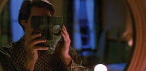

<?xml version="1.0" encoding="UTF-8"?>
<rss version="2.0"
	xmlns:content="http://purl.org/rss/1.0/modules/content/"
	xmlns:wfw="http://wellformedweb.org/CommentAPI/"
	xmlns:dc="http://purl.org/dc/elements/1.1/"
	xmlns:atom="http://www.w3.org/2005/Atom"
	xmlns:sy="http://purl.org/rss/1.0/modules/syndication/"
	xmlns:slash="http://purl.org/rss/1.0/modules/slash/"
	>

<channel>
	<title>The Civilization Gene &#187; meta-psychopaths</title>
	<atom:link href="http://civgene.matthewnewhall.com/archives/category/meta-psychopaths/feed" rel="self" type="application/rss+xml" />
	<link>http://civgene.matthewnewhall.com</link>
	<description>Civilization is the Logic of Compassion</description>
	<lastBuildDate>Mon, 24 Nov 2014 17:55:17 +0000</lastBuildDate>
	<language>en-US</language>
	<sy:updatePeriod>hourly</sy:updatePeriod>
	<sy:updateFrequency>1</sy:updateFrequency>
	<generator>http://wordpress.org/?v=3.6.1</generator>
		<item>
		<title>The Rose/Manson Interview</title>
		<link>http://civgene.matthewnewhall.com/archives/266</link>
		<comments>http://civgene.matthewnewhall.com/archives/266#comments</comments>
		<pubDate>Thu, 24 Oct 2013 18:36:38 +0000</pubDate>
		<dc:creator>Matthew Newhall</dc:creator>
				<category><![CDATA[ASPD]]></category>
		<category><![CDATA[compound emotions]]></category>
		<category><![CDATA[conscience]]></category>
		<category><![CDATA[counter-culture]]></category>
		<category><![CDATA[emotional triggers]]></category>
		<category><![CDATA[empaths]]></category>
		<category><![CDATA[genetics]]></category>
		<category><![CDATA[know yourself]]></category>
		<category><![CDATA[meta-psychopaths]]></category>
		<category><![CDATA[metamind]]></category>
		<category><![CDATA[primary emotions]]></category>
		<category><![CDATA[propaganda]]></category>
		<category><![CDATA[psychology]]></category>
		<category><![CDATA[psychopaths]]></category>
		<category><![CDATA[society]]></category>
		<category><![CDATA[sociopath]]></category>
		<category><![CDATA[subconscious]]></category>
		<category><![CDATA[violence]]></category>

		<guid isPermaLink="false">http://civgene.matthewnewhall.com/?p=266</guid>
		<description><![CDATA[Now for something a little more down to earth. This is a great video to grasp the basics of psychopathy.  Manson clearly lands in the ASPD stage.  This includes Narcissistic elements of course.  Looks like he never resolved himself to the long game of sociopathy.  He is not aware and apparently not interested that Rose [&#8230;]]]></description>
				<content:encoded><![CDATA[<p>Now for something a little more down to earth.</p>
<p><iframe width="625" height="469" src="http://www.youtube.com/embed/H4uT6ou_ZGw?feature=oembed" frameborder="0" allowfullscreen></iframe></p>
<p>This is a great video to grasp the basics of psychopathy.  Manson clearly lands in the ASPD stage.  This includes Narcissistic elements of course.  Looks like he never resolved himself to the long game of sociopathy.  He is not aware and apparently not interested that Rose is not falling for his emotional trigger saturated scripts.  He is clearly very intelligent as the smarter the psychopath the more effective the scripts.  Not that it matters for him at this point, facing life in prision give little motivation to cover up who he is.</p>
<p>It&#8217;s not surprising if you find this video difficult to watch.  Beside ethical indignation at his acts, he is very, very good at lighting off emotional triggers.  He is actually trying to program the other viewers, Rose, and you as you watch.  If you didn&#8217;t notice you are likely very vulnerable to both marketing and propaganda.  Your metamind, probably felt in your gut, should be <strong>screaming</strong>!  It is critical that you understand and recognise that technique if you ever expect to know yourself.</p>
<p>If you&#8217;ve seen inception, your metamind should feel something like this.</p>
<p style="text-align: center;"><a href="../../../wp-content/uploads/2013/10/intruder.jpg"></a></p>
<p>You&#8217;ll only get to experience clear first hand sight of these scripts if you improve your technique enough that a psychopath is forced to switch scripts several times.  This is what Manson is doing throughout with Rose.  Constantly changing the topic so he can use his whole salvo of emotionally charged words to try and implant new ideas in your or Rose&#8217;s head.</p>
<p>If you were to transcribe and then rewrite Mansons words with less common synonyms, you would notice a few things.</p>
<p>While the scripts are coherent to themselves, the larger thread they follow is almost totally incoherent.  He is clearly just pulling the next script out of the &#8216;comfey&#8217; or &#8216;scared&#8217; or &#8216;remorseful&#8217; pile, depending on what he wants you to feel.   Of course a sociopath who is successfully integrated into the corporate world (for example) will have much longer much more complex scripts.</p>
<p>In a more abstract sense the rambling choice of scripts is a commentary on the empathic mind.  He so much as says so.  <strong>He is pointing out how irrational we are, and how we made ourselves vulnerable to people like him.  He clearly is not aware of others in this sense.  That&#8217;s why he isn&#8217;t a sociopath.  He has no idea we have a metamind that specializes in connecting unlike things by compound emotion.</strong>  From his perspective the origin of empathic ideas is totally opaque.  Just a random number generator.</p>
<p>This video in part is the inspiration for the metamind model.  We could sit there all day and attach meanings to his ramblings, he&#8217;s counting on that, but his assortment of scripts are are what they are to him.  Just buckets full of scripts.  His lone insight through his sole lens is that we are insane from his perspective.</p>
]]></content:encoded>
			<wfw:commentRss>http://civgene.matthewnewhall.com/archives/266/feed</wfw:commentRss>
		<slash:comments>1</slash:comments>
		</item>
		<item>
		<title>The Norse &#8211; a psychopath cooperative</title>
		<link>http://civgene.matthewnewhall.com/archives/188</link>
		<comments>http://civgene.matthewnewhall.com/archives/188#comments</comments>
		<pubDate>Mon, 14 Oct 2013 20:03:16 +0000</pubDate>
		<dc:creator>Matthew Newhall</dc:creator>
				<category><![CDATA[capitalism]]></category>
		<category><![CDATA[collapse]]></category>
		<category><![CDATA[counter-culture]]></category>
		<category><![CDATA[economics]]></category>
		<category><![CDATA[empaths]]></category>
		<category><![CDATA[genetics]]></category>
		<category><![CDATA[government]]></category>
		<category><![CDATA[meta-psychopaths]]></category>
		<category><![CDATA[metamind]]></category>
		<category><![CDATA[republic]]></category>
		<category><![CDATA[society]]></category>

		<guid isPermaLink="false">http://civgene.matthewnewhall.com/?p=188</guid>
		<description><![CDATA[I&#8217;ve discussed the United States here, or less specifically a capitalist republic, as a psychopath trap.  The core idea is to keep them busy fighting each other, so emapths can live their lives out in relative piece.  In return the psychopaths get to live out their impulses for conflict or seek the social isolation vast [&#8230;]]]></description>
				<content:encoded><![CDATA[<p style="text-align: center;"><a href="../../../wp-content/uploads/2013/10/ship.jpg"></a></p>
<p>I&#8217;ve discussed the United States here, or less specifically a capitalist republic, as a psychopath trap.  The core idea is to keep them busy fighting each other, so emapths can live their lives out in relative piece.  In return the psychopaths get to live out their impulses for conflict or seek the social isolation vast wealth provides, depending on their their personal conclusions.  It seems there is another &#8216;hands on&#8217; model that allows empaths and psychopaths to live in relative peace, the cooperative.</p>
<p>This is more a social structure than a traditional government, but considering the limitations it was very successful.  The key to this is the Vikings or the older &#8216;Norse&#8217; dual view of their gods.  Specifically Loki and Thor.  Loki is not a hated villain like he is through our modern western metamind lens.  He is simply mischievous or troublesome, possibly even viewed as just quirky.  This is completely contrary to our society which reveres order and authority.  But after careful study the nature of Loki is clear, he is very much a psychopath.</p>
<p>Loki and Thor of course are brothers, and so goes the culture.   Primarily an agrarian society, the vikings were reasonably peaceful at home.  Farming is an arduous and disciplined and waste brings ruin.  Yet no larger &#8216;government&#8217; is needed.  Few laws.  I&#8217;m not implying that the vikings had no psychopaths, to the contrary, I think they had the most.  Because they had a mechanism to keep them in check.  The entire body of able bodied men were meta-psychopaths.</p>
<p>After the planting or harvest the day to day life was transformed.  They went from a peaceful and successful people to ruthless barbarians the world knew.  It has been argued this was a move of desperation, but that may have just been the start.  Just like their gods are split between psychopath and empath, so is their time.  It was time to rape and pillage, it was the psychopaths turn.  A vacation of brutal mayhem for the willing and able.</p>
<p>A vacation is probably a good word but it was more like a religious &#8216;retreat.&#8217;  Just like other religions imposing external maps on the empaths, the empaths were encouraged with promises of a perfect afterlife in the halls of Valhalla.  They would follow their temporary &#8216;priests&#8217; and in turn the psychopaths would train and condition them in how to let go of their conscience, when they needed to.  The empaths had become meta-psychopaths.  When they returned the empaths knew how to keep the psychopaths in check and the psychopaths knew it.  This protected the local economy. It started back up and life went on.</p>
<p>I have no idea if the psychopaths were self limiting via collapse in this scenario.  I would guess not.  It was probably the multi-month gaping hole in their economy which did them in.  With the slower economy they wouldn&#8217;t be able to keep up technologically.  Eventually their culture was subverted by more advanced civilizations, on village at a time.</p>
<p>It is a cultural system so it can show up in any government at any time.  The only prerequisite is a government which is feeling the effects of growing numbers of psychopaths. If you want to study how this works I&#8217;d suggest examining the conflict and cooperation between the Roman capitalist republic and the viking cooperative.  Their histories are intertwined.  It is highly unlikely that the Romans(fierce warriors on their own) increasing fascination with the Norse as their empire was slowly disintegrating was a coincidence.  One throwback of this Roman fascination with the psychopathic cooperative that still exists today, the Swiss Guard still protects the Vatican.</p>
<p>As an example of a modern societal wave reflecting an increasing percentage of psychopaths, the global heavy metal counter culture, despite no direct connection, displays attributes of the Norse.  But don&#8217;t blame the growing numbers of meta-psychopaths, they are simply empaths reacting to a changing more brutal society.  Since psychopathy is genetic and recessive, the individual meta-psychopaths could not control the growing numbers of psychopaths if they tried.</p>
]]></content:encoded>
			<wfw:commentRss>http://civgene.matthewnewhall.com/archives/188/feed</wfw:commentRss>
		<slash:comments>2</slash:comments>
		</item>
		<item>
		<title>Proto-psychopaths and Meta-psychopaths</title>
		<link>http://civgene.matthewnewhall.com/archives/142</link>
		<comments>http://civgene.matthewnewhall.com/archives/142#comments</comments>
		<pubDate>Wed, 09 Oct 2013 15:43:03 +0000</pubDate>
		<dc:creator>Matthew Newhall</dc:creator>
				<category><![CDATA[childhood]]></category>
		<category><![CDATA[conscience]]></category>
		<category><![CDATA[empaths]]></category>
		<category><![CDATA[know yourself]]></category>
		<category><![CDATA[meta-psychopaths]]></category>
		<category><![CDATA[metamind]]></category>
		<category><![CDATA[proto-psychopaths]]></category>
		<category><![CDATA[psychology]]></category>
		<category><![CDATA[psychopaths]]></category>
		<category><![CDATA[society]]></category>
		<category><![CDATA[spies]]></category>
		<category><![CDATA[subconscious]]></category>

		<guid isPermaLink="false">http://civgene.matthewnewhall.com/?p=142</guid>
		<description><![CDATA[Credit for the proto-psychopath goes to Thomas Sheridan.  I first read about it in his book &#8216;Puzzling People.&#8217;   It is an important part of the puzzle.  He mainly talks about proto-psychopaths having been so badly reprogrammed that their conscience is effectively shut off.  Their resulting behavior is indistinguishable from a psychopath.  An empath would need [&#8230;]]]></description>
				<content:encoded><![CDATA[<p style="text-align: center;"><a href="../../../wp-content/uploads/2013/10/Mask.jpg"></a></p>
<p>Credit for the proto-psychopath goes to Thomas Sheridan.  I first read about it in his book &#8216;Puzzling People.&#8217;   It is an important part of the puzzle.  He mainly talks about proto-psychopaths having been so badly reprogrammed that their conscience is effectively shut off.  Their resulting behavior is indistinguishable from a psychopath.  An empath would need to be under a continuous interactive reprogramming effort.  As we know the metamind is constantly changing as it&#8217;s data changes.  Add enough new data with no reprogramming and a conventional conscience will reform, possibly bringing with it terrible guilt in the face of psychopathic acts.  They have been reprogrammed, probably with great effort and care, to eliminate or cancel out conscionable emotional effects.   Proto-psychopaths are most likely to occur in a slavery or cult setting, where they are living with one or more psychopaths.</p>
<p>I suggest that there is a second form of emapth who can act like a psychopath, the meta-psychopath.  They have an active conscience, but they look, can act and can function like a psychopath.  Their <a title="Metamind" href="http://civgene.matthewnewhall.com/index.html%3Fp=64.html">metamind</a> has been more or less completely resolved with their logical mind.  While they still have emotional metadata and still have compulsory emotional recall,  they know the source of all their emotions and are able to completely cancel out the distracting or possibly crippling effects of their emotional responses.  In other words, this behavior is only possible if they <a title="Knowing yourself is key." href="http://civgene.matthewnewhall.com/index.html%3Fp=32.html">know themself</a>.</p>
<p>I&#8217;m inclined to think that there are several factors, possibly in concert, contributing to an empath <em>becoming</em> a meta-psychopath.  I emphasize &#8216;becoming&#8217; here because the metamind is fluid, changing emotional context with experience, and subsequently the meta-psychopaths ability to act as a psychopath devoid of outward conscionable reactions.  Emotional resiliency(or emotional quotient), youthful exposure to psychopaths, life changing emotional events, or even planned conditioning may all play a factor.</p>
<p>Some adult examples of people who might be meta-psychopaths are spys, police, soldiers, politicians, or business leaders.  People who can blend with psychopaths on the surface, working toward long term conscionable goals in secret.  I use adults careers to create clear examples of the use of role, but career may not be directly related to how someone became a meta-psychopath.</p>
<p>Empathic children may pretend to be psychopaths as defensive tactic.  While it&#8217;s doubtful they can be so worldly as to never be surprised by their own emotions, they pretend as if this is the case.  It may be a sign that they are being exposed to an actual psychopath.  Interestingly while this duplicitous posture may make them social failures or outcasts at a young age, they may later become a successful adult meta-psychopath, coming into a position do great good for their society as moral agent able to navigate psychopathic societies.  Unfortunately their existence further clouds the landscape and provides a cover for psychopaths.</p>
]]></content:encoded>
			<wfw:commentRss>http://civgene.matthewnewhall.com/archives/142/feed</wfw:commentRss>
		<slash:comments>2</slash:comments>
		</item>
	</channel>
</rss>
